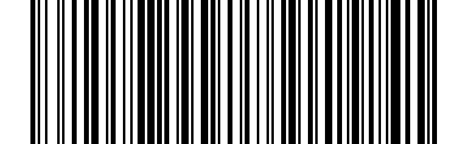

Modalità Bluetooth#
Scansiona la modalità Bluetooth, quindi premi il pulsante per iniziare, puoi passare alla trasmissione Bluetooth, attivare Bluetooth per cercare dispositivi per l’accoppiamento, e dopo il successo dell’accoppiamento, è possibile trasmettere i dati tramite Bluetooth.
Nome Bluetooth:
barcode scanneroNETUM BluetoothPassa alla modalità Bluetooth e l’indicatore luminoso blu si accenderà.
Nota
La luce blu significa:
1La luce blu lampeggia, indicando che non è collegata.
2La luce blu è accesa, indicando che è collegata.
HID Bluetooth#
{kind=link}
* HID Bluetooth#
SPP Bluetooth#
{kind=link}
SPP Bluetooth#
Bluetooth BLE#
{kind=link}

Bluetooth BLE#
Nota
Bluetooth SPP e Bluetooth BLE sono modalità utilizzate per il docking software. Se è necessario cercare e accoppiare attraverso il Bluetooth, è necessario utilizzare Bluetooth HID
Cancella Informazioni Di Accoppiamento#

Cancella Informazioni Di Accoppiamento#
Nota
Ricoppia con un nuovo dispositivo, o se l’accoppiamento fallisce, scansiona il codice di configurazione per accoppiare di nuovo.
IOS Popup/Nascondi Tastiera#

IOS Popup/Nascondi Tastiera#
Nota
È inoltre possibile premere il pulsante di scansione due volte di fila per far comparire / nascondere la tastiera senza scansionare il codice. Questa funzione supporta solo l’accoppiamento Bluetooth sul sistema iOS.
Velocità Di Trasmissione Tastiera Bluetooth#

Ottieni Velocità Di Trasmissione Tastiera Bluetooth#
Alta Velocità#

Alta Velocità#
Velocità Media#

Velocità Media#
Bassa Velocità#

Bassa Velocità#